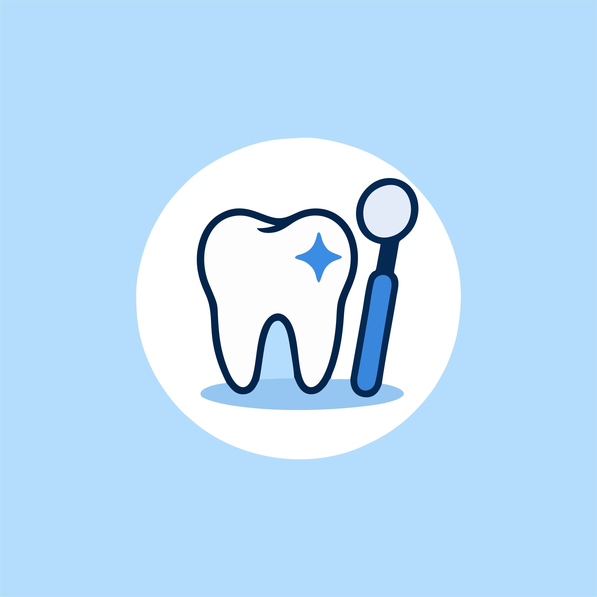

Berobat Lebih Tenang,
Daftar dari Rumah
Klinik rawat jalan terpadu di Kota Kediri dengan empat poliklinik. Lihat jadwal dokter dan ambil nomor antrean tanpa perlu antre di loket pagi hari.
Empat Poliklinik
Layanan kesehatan spesifik untuk memenuhi berbagai kebutuhan keluarga Anda

Mengapa Memilih Sehat Nusantara?
Kemudahan dan kenyamanan pelayanan pasien adalah prioritas utama kami
Daftar Tanpa Antre di Loket
Isi formulir dari ponsel dan langsung dapatkan nomor antrean sebelum Anda berangkat ke klinik.
Jadwal Praktik Transparan
Hari dan jam praktik tiap dokter tertera jelas dan dapat dipantau setiap saat agar waktu Anda efisien.
Data Pasien Akurat & Aman
Sistem memvalidasi NIK dan kontak pasien untuk memudahkan rekam medis serta tindak lanjut pelayanan.
Jam Operasional
Waktu pelayanan rawat jalan Klinik Pratama Sehat Nusantara
| Hari | Jam Layanan |
|---|---|
| Senin – Jumat | 07.30 – 17.00 WIB |
| Sabtu | 07.30 – 12.00 WIB |
| Minggu & Libur Nasional | Tutup |
Rencanakan Kunjungan Anda
Ambil nomor antrean sekarang untuk mendapatkan kepastian waktu konsultasi dengan dokter.
Daftar Pasien Baru